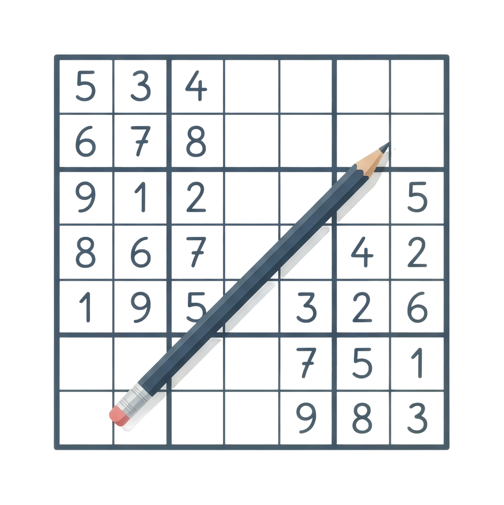

Fácil
40 células vaziasPerfeito para aquecer e ganhar confiança no tabuleiro.

Jogue Sudoku online com quatro níveis de dificuldade, cronômetro e dicas — e acompanhe todas as suas vitórias em um painel só seu.

Fácil ao Especialista
Cada partida é registrada para você ver a sua evolução de verdade — sem planilhas, sem anotações, sem trabalho manual.
Do Fácil ao Especialista, cada tabuleiro é um desafio na medida certa.
Meça o tempo de cada partida e acompanhe os erros e as dicas usadas.
Travou em um número? Peça uma dica e siga avançando sem perder o ritmo.
Taxa de vitória, tempo médio, sequência de vitórias e histórico completo.
Simples de começar, fácil de manter o hábito.
Leva menos de um minuto e é grátis.
Selecione a dificuldade e resolva o tabuleiro no seu ritmo.
Cada partida alimenta o seu painel de estatísticas.
Cada nível muda a quantidade de células vazias no tabuleiro. Comece leve e chegue ao Especialista.
Perfeito para aquecer e ganhar confiança no tabuleiro.
O clássico equilibrado, ideal para o dia a dia.
Exige concentração e boas estratégias de eliminação.
Só para veteranos: cada número precisa de paciência.